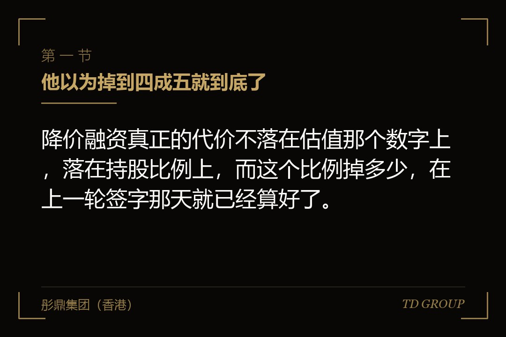
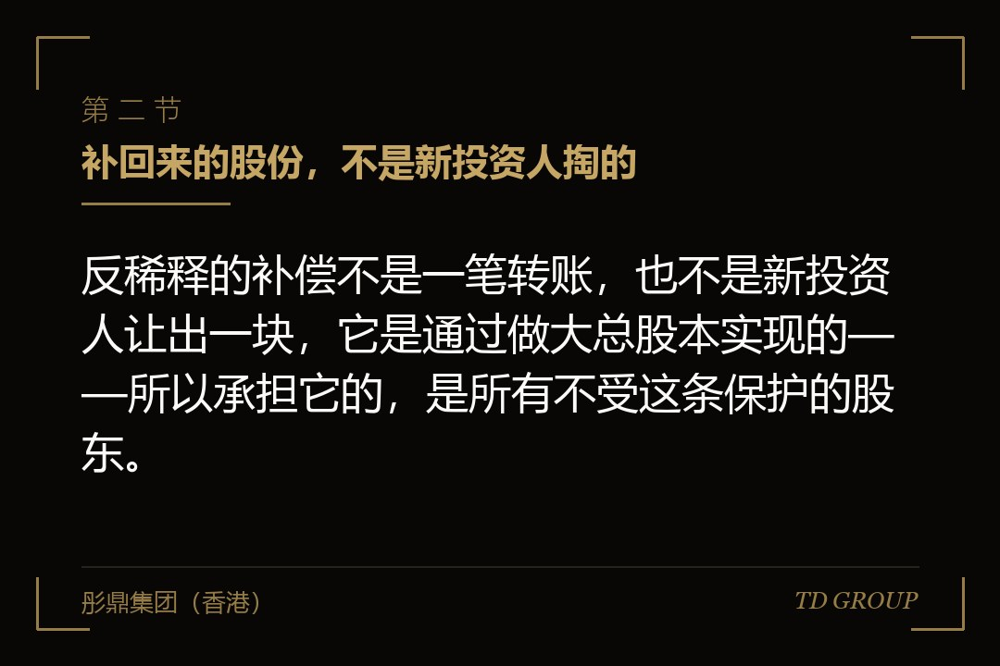
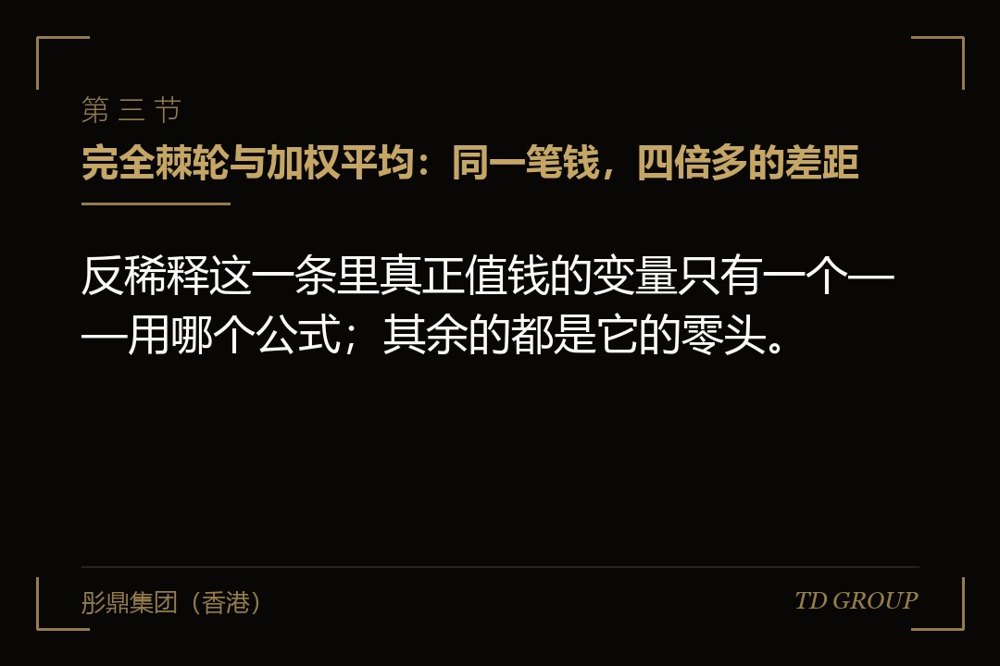

一、他以为掉到四成五就到底了

结论先行：降价融资真正的代价不落在估值那个数字上，落在持股比例上，而这个比例掉多少，在上一轮签字那天就已经算好了。
假设有这么一家做数控刀具的企业。它拿过一轮机构融资：那一轮之前公司总股本七千五百万股，其中创始团队六千七百五十万股、员工期权池七百五十万股；投资人按每股二元四角的价格投进六千万元，取得两千五百万股，投前估值一亿八千万，投后两亿四千万。那一轮结束时的股权结构很清楚——创始团队百分之六十七点五，期权池百分之七点五，投资人百分之二十五。
两年后行业进入下行周期，机床行业的整体开工率往下走，公司订单量掉了一截。新一轮融资谈了小半年，最终的价格是每股一元二角，正好是上一轮的一半；新投资人投进六千万元，取得五千万股。
创始人接受这个价格的时候，心里那笔账是这么算的：公司投前估值从两亿四千万掉到一亿二千万，账面上难看，但钱进来了，公司活下去了；股权上他自己会被摊薄，六千七百五十万股在新的一亿五千万股总股本里，是百分之四十五。四成五，虽然掉了不少，好歹还是最大的单一股东。
交割文件出来的时候，那个数字是百分之三十八点五七。
多出来的那两千五百万股，是上一轮投资人的。上一轮的投资协议里有一条反稀释条款，写的是完全棘轮：新一轮的发行价格低于上一轮换股价格的，上一轮优先股的换股价格自动调整为新一轮的价格。
上一轮投的六千万元，原本按每股二元四角折两千五百万股，现在按每股一元二角折五千万股——股数变成原来的两倍，公司账上一分钱没多进来。总股本因此从一亿五千万股变成一亿七千五百万股，创始团队的六千七百五十万股在这个新分母下就是百分之三十八点五七。
这件事上没有人违约，也没有人算错。创始人后来复盘时说得很准：那一条他当时看过，看的时候觉得"公司又不打算降价融资，这条用不上"，谈判的力气全花在了估值、董事席位和否决事项上。他漏掉的不是那三行字的意思，是那三行字的性质——那不是一条到时候要谈的条款，是一条到时候会自己执行的条款。
有几件相邻的事此处只作一句交代：公司被出售或者清算时对价按什么顺序分给谁，那是优先清算权的算法，本文不展开；降价融资本身该怎么跟老股东谈价格，另有专门的讨论；完全稀释口径的股本表怎么搭、哪些工具要计入，同样另有讨论；老股东按原比例继续出资以维持自身比例的那项权利，与本文讲的自动调整是两件事，也另有讨论；创始人股份的成熟安排、投资方的否决事项清单、可转换票据到期怎么转股，本文一律只作一句交代。本文只讲一件事：价格往下走的那一刻，谁的比例被自动挪走了，挪的那部分从谁身上出。
二、补回来的股份，不是新投资人掏的

结论先行：反稀释的补偿不是一笔转账，也不是新投资人让出一块，它是通过做大总股本实现的——所以承担它的，是所有不受这条保护的股东。
先把机制说清楚。机构投资人拿到的通常不是普通股，而是可以按约定比例转换成普通股的优先股。转换比例由"换股价格"这个参数决定：投进来的金额除以换股价格，等于可以换到的普通股股数。初始换股价格一般就等于该轮的每股发行价，所以刚交割时，投多少钱、占多少股，看起来跟普通股没什么两样。
反稀释条款动的正是这个参数。它不动投资人已经投进来的金额，也不要求任何人补钱，它只是把换股价格往下调。金额不变、除数变小，商就变大——同样的六千万元，换股价从二元四角调到一元二角，能换到的股数就从两千五百万股变成五千万股。
多出来的那两千五百万股从哪里来？不是从新投资人手上来的：他按每股一元二角投了六千万元，拿到的就是五千万股，这个数不因为反稀释触发而减少；也不是公司拿钱去买的，公司一分钱没出。它是新发行出来的——在完全稀释口径的股本表上，总股本直接变大了两千五百万股。
分母变大，所有不受保护的股东的比例就同步变小。谁不受保护？创始团队、员工期权池、以及历史上那些没有拿到反稀释条款的小股东。他们的股数一股没少，比例却掉了。
回到数控刀具那家公司的数字，把三方的变化并排看一遍就很清楚。无反稀释安排时，总股本一亿五千万股，创始团队百分之四十五、期权池百分之五、上一轮投资人百分之十六点六七、新投资人百分之三十三点三三。完全棘轮触发后，总股本一亿七千五百万股，创始团队百分之三十八点五七、期权池百分之四点二九、上一轮投资人百分之二十八点五七、新投资人百分之二十八点五七。
留意上一轮投资人那一栏：从百分之十六点六七涨到百分之二十八点五七，涨了将近十二个百分点，而创始团队只掉了六点四三个百分点。差额是从哪儿来的？期权池掉了零点七一个点，新投资人自己也掉了四点七六个点——分母做大，新投资人同样被摊薄。
新投资人当然明白这一点。所以在谈判力足够时，他会把自己那一侧的比例锁死，写成"本轮交割完成后，本轮投资人持股比例不低于某个数"，或者直接把发行价格再往下压一档，把反稀释造成的摊薄提前算进定价里。这个动作一旦成立，摊薄再往前推一层，落在创始团队和期权池身上的会更多。
一家做口腔连锁诊所的企业在这上面吃过一次亏。它的降价融资里，新投资人一开始报的价格并不算离谱，条款清单谈到后半程时对方提了一句"我们做过一版摊薄测算，考虑到你们上一轮那条反稀释，本轮的价格需要再调整一下"。
创始人当时理解成对方在压价，据理力争了两轮，最后各让一步。直到交割文件出来他才明白，对方压的不是价格，是在为一件他自己签字同意过的事付账——上一轮那条完全棘轮，最终由他自己承担了绝大部分，而新投资人只是提前把它折进了报价里。
三、完全棘轮与加权平均：同一笔钱，四倍多的差距

结论先行：反稀释这一条里真正值钱的变量只有一个——用哪个公式；其余的都是它的零头。
完全棘轮的算法上一节已经写完了：新一轮价格低于上一轮换股价格的，上一轮换股价格直接调整为新一轮价格，不管新一轮发行了多少股。它的特点是不看规模——哪怕新一轮只发行了很少的一点股份，只要价格低，上一轮的换股价格也要一路调到那个价格。
加权平均则把规模算进去。它的常见形式是这样一条式子：调整后的换股价格，等于调整前的换股价格，乘以一个分数；这个分数的分子是"本次发行前的股本基数，加上本次投入的金额按调整前换股价格可以取得的股数"，分母是"本次发行前的股本基数，加上本次实际发行的股数"。
这条式子的直观含义是：新一轮若只是小额发行，即便价格很低，对上一轮的影响也有限；规模很大时影响才会显著。它反映的是"这次降价改变了多少公司股本的定价"，而不是简单把价格拉平。
还是那家数控刀具企业的数字。上一轮换股价二元四角，本次发行前的完全稀释股本一亿股，本次投入六千万元，按二元四角本可取得两千五百万股，本次实际发行五千万股。代进去：二元四角乘以（一亿加两千五百万）除以（一亿加五千万），等于每股二元。
上一轮的六千万元按每股二元折三千万股，比原来的两千五百万股多出五百万股，而不是完全棘轮下的多出两千五百万股。总股本一亿五千五百万股，创始团队六千七百五十万股，占百分之四十三点五五。
把三种情形并起来看，创始团队的持股比例分别是：无反稀释安排百分之四十五、宽基础加权平均百分之四十三点五五、完全棘轮百分之三十八点五七。相对于无反稀释，加权平均让创始团队多掉了一点四五个百分点，完全棘轮让创始团队多掉了六点四三个百分点——后者是前者的四倍多。
这个倍数值得单独记住，因为它不是这一个假设情形独有的。
完全棘轮把降价的全部后果都压到不受保护的股东身上，加权平均按发行规模分摊，两者的差距在新一轮发行规模较小时会拉得更开：如果这家公司新一轮只投进来一千万元，完全棘轮下上一轮的换股价格照样调到一元二角、照样多出两千五百万股，而加权平均下调整后的换股价格约为二元三角一分，上一轮只多出一百万股。同一条降价融资，一个公式让创始团队掉六个多点，另一个几乎不痛不痒。
一家做民用无人机的企业在条款清单阶段把这一条放过去了。创始人的原话是"对方说这一条各家都这么写，我看它就三行字，也没多想"。三行字里那个"调整为本次发行价格"和"按加权平均公式调整"，在纸面上的长度差不多，在两年后的股本表上差了六个百分点。他后来在下一轮里把这一条改成了宽基础加权平均，代价是在董事会席位上让了一步——他自己的评价是，这一步换得很值。
顺带说明一个容易混淆的点：反稀释保护的是换股比例，不是投资金额。它不保证投资人不亏钱，也不是一项收益安排——公司估值继续往下走，投资人手上的股份价值照样缩水。它保证的是"每一块钱对应多少股"这件事不因为后续的低价发行而吃亏。把它理解成一项保底安排是不准确的，也会让企业方在谈判里把它的性质说错。
四、分母怎么定义，值两个百分点
结论先行：加权平均公式里那个"本次发行前的股本基数"，宽基础和窄基础是两个不同的数，而它们之间的差额，直接落在创始团队的比例上。
上一节代入公式的时候，本次发行前的股本基数用的是一亿股——这是完全稀释口径，把已发行的普通股、已发行的优先股按转换后计算的股数、以及员工期权池里已授予和未授予的部分全部计入。这种口径通常被称作宽基础。
窄基础则只计入较小的范围。常见的写法是只计入已发行在外的优先股按转换后计算的股数，不计入普通股，也不计入期权池和其他尚未行权的工具；也有介于两者之间的写法，比如计入普通股与优先股但不计入期权池。具体计入哪些，完全看协议怎么写，市场上并没有统一的标准定义，所以这一项在谈判里必须逐条列明，不能只写"宽基础"或者"窄基础"这个词了事。
数字上的差别很直接。还是那家数控刀具企业，若窄基础只计入上一轮的优先股两千五百万股：二元四角乘以（两千五百万加两千五百万）除以（两千五百万加五千万），等于每股一元六角。上一轮的六千万元按一元六角折三千七百五十万股，比原来多出一千二百五十万股。总股本一亿六千二百五十万股，创始团队占百分之四十一点五四。
跟宽基础的百分之四十三点五五比，差了两点零一个百分点。分母越小，公式里那个分数就越小，调整幅度就越大，摊薄就越重。所以企业方在这一条上要争的是宽基础。
一家做特种胶粘剂的企业在这上面遇到过一次真正的争议，争的不是宽窄本身，而是"期权池算不算"。
协议里写的是"本次发行前的完全稀释股本"，双方对池子里那部分尚未授予的额度算不算数产生了分歧：投资人认为完全稀释指的是已经存在的权利，未授予的不是任何人的权利；企业方认为期权池是股本表上确定预留的，一直按完全稀释口径列示。
最后是靠这家公司历轮融资文件里都附了同一张股本表、而那张表上未授予部分一直计入完全稀释总数，才把这件事定下来。
教训不在于谁对谁错，在于"完全稀释"这四个字在不同人口中不是同一个数。写条款时把计入项逐项列出来——已发行普通股、已发行优先股按转换后计算的股数、期权池已授予部分、期权池已预留未授予部分、其他已发行在外的可转换工具——比写四个字省事得多。
五、哪些发行不触发：例外清单是最容易被漏掉的一页
结论先行：反稀释条款真正决定企业方日常自由度的，不是公式，是例外清单——清单漏项的后果，是一些本来跟"降价"毫无关系的日常动作，也把这条自动机制点着了。
反稀释条款通常都会附一段例外发行的约定：落在清单内的发行，即便价格低于上一轮换股价格，也不触发调整。常见的例外大致有这么几类。
类型一是股权激励。按公司已有的、经董事会（通常包括投资方委派的董事）批准的股权激励计划，向员工、董事、顾问发行的股份或者授予的期权，在约定的池子上限之内不触发。这一类几乎是必须要有的——期权的行权价格天然低于融资价格，不写进例外，等于公司每授予一次期权就触发一次反稀释。
类型二是既有工具的行权与转换。已发行在外的期权、认股权证、可转换票据等按其原有条款行权或者转换而发行的股份，不触发。理由很直白：那些工具的价格是当初已经谈过的，不该被算作一次新的低价发行。
类型三是股本结构的技术性调整。股份拆细、合并、送股、资本公积转增，以及类似的按比例调整，不触发。这一类不改变任何人的相对比例，本来就不涉及稀释。
类型四是经批准的战略性发行。因并购、合资、战略合作、设备融资租赁、银行或者其他金融机构提供融资而附带发行的股份或者认股权证，在经董事会或者约定比例的优先股股东批准的前提下不触发。这一类在实务中最容易漏。
类型五是豁免。经持有约定比例优先股的股东书面同意的任何发行，不触发——这一类是兜底，下一节单独说。
清单漏项的代价是实打实的。一家做园林景观工程的企业遇到的就是这种情形：它在拿到一笔银行授信时，按银行的要求向一家关联的融资服务主体发行了一小笔认股权证，行权价格很低。
这笔发行的商业目的跟股权融资毫无关系，规模也很小，但它不在例外清单里，于是触发了上一轮的反稀释调整。
调整幅度按加权平均算出来并不大，连锁麻烦却不小：股本表要重出，历轮的转换价格要重算，正在推进的一笔员工激励授予被迫暂停，公司为此多花了一个多月和一笔不算少的中介费用。
所以例外清单值得在签字前逐条对着公司未来两三年可能发生的动作过一遍：还打算不打算扩期权池、有没有可能用股权换资源做并购或者战略合作、设备与厂房的融资租赁会不会附带认股权、银行授信会不会有类似要求、会不会引入产业方做少量的战略入股。凡是想得到的都写进例外，写不进去的至少要约定一个门槛——比如单次发行金额或者股数低于某个水平的不触发，或者一段时间内累计低于某个水平的不触发。
六、能不能按下不表：豁免、继续出资安排，以及那道程序门槛
结论先行：反稀释触发之后，谈判的对象不是"要不要调整"，而是"对方愿不愿意豁免"——主动权在对方手上，所以真正要在签字时争取的，是让豁免这件事在程序上做得到。
先说清楚为什么"到时候再谈"这个想法靠不住。反稀释条款的通常写法是"换股价格自动调整为……"，它不需要老投资人发出通知、不需要董事会作出决议、也不需要公司同意。触发条件成就的那一刻，调整就已经发生了，后续的股本表只是把这个既成事实记下来。企业方在这里没有一个可以说"不"的环节。
企业方有的是另一条路：请老投资人放弃这次调整，也就是豁免。豁免在实务中确实谈得成，因为它未必违背老投资人的利益——公司这一轮融不进钱就会出问题，而创始团队被摊薄过重会直接影响他继续投入的意愿，这两件事对老投资人来说都是坏消息。谈判的抓手通常不是道理，是这一轮能不能顺利交割。
但谈得成的前提是程序上办得到，而这一点在签字时就已经定死了。协议里如果写的是"须经全体优先股股东一致书面同意方可豁免"，那么股东名册上任何一个人不配合，豁免就做不成。这不一定是有人故意为难——上面那家园林景观工程企业就遇到过：它的历轮股东里有一位早期的个人股东，人在境外，联系了三周才回复，而那时新一轮的交割日已经改过两次。把事情卡住的从来不是那位股东的意见，是那句"全体一致同意"。
所以这一条在签字时值得争的写法是：豁免经持有多数优先股（或者按转换后计算持有多数表决权的优先股）的股东书面同意即可，且该同意对全体优先股股东具有约束力。这个改动看着只是把"一致"换成"多数"，实际是把一件不可控的事变成了可安排的事。
另一类安排是把保护与继续出资绑在一起。常见的做法是约定：新一轮融资时，老投资人须按其原持股比例（或者约定的一定比例）继续出资，否则其优先股所享有的反稀释保护自动失效，或者其优先股按约定比例自动转为普通股。这一条对企业方是有利的，因为它把反稀释还原成了它本来的样子——一项给"愿意继续陪着走"的股东的保护，而不是给"只想守住比例、不肯再投一分钱"的股东的保护。
一家做智能门锁的企业把这一条用出了效果。它的上一轮有三家机构股东，条款里写了继续出资的安排。降价融资来临时，三家里只有一家按比例跟进，另外两家出于自身原因没有出资，其反稀释保护按约定失效。最终触发调整的只有一家，而且那一家是真金白银又投了一笔进来的。创始人事后说，这一条当初是对方主动提的——领投的那家不希望自己出钱、别人搭车，结果这条对公司同样有利。
还有几个在签字时可以一并写进去的限制，成本很低，用处不小：设一个价格下限，约定调整后的换股价格不低于某个具体数字，这样即便公司经历一次很深的降价，摊薄也有一个尽头；设一个时间限制，约定自本轮交割起满约定年限之后不再适用反稀释调整；设一个金额门槛，约定单次或者累计发行规模低于某个水平的不触发。这三条在谈判里都不算过分的要求，因为它们不改变条款的性质，只是给它划了边界。
七、连锁反应：期权池被摊薄之后，补池又摊薄谁
结论先行：反稀释触发的伤害不止那一次——它同时把期权池摊薄了，而期权池补回去，摊薄的又是创始团队。
回到数控刀具那家公司。完全棘轮触发后，期权池那七百五十万股在一亿七千五百万股的总股本里只剩百分之四点二九，而在上一轮刚结束时它是百分之七点五。这个变化在交割那天不会有人提，因为期权池不是一个会在会议室里说话的股东。
问题会在几个月之后出现。公司刚经历一次降价融资，正是最需要留住核心团队的时候，而池子里可授予的额度已经不够用了——历史上授出去的还占着大部分，剩下能给新人和续授的所剩无几。于是新投资人（或者公司自己）提出把期权池补回到百分之十。
补回去要发行多少股？在一亿七千五百万股的基础上，需要新增约一千一百一十一万股，总股本变成约一亿八千六百一十一万股，池子才回到百分之十。这一次发行按上一节说的，通常落在例外清单里，不会再触发一次反稀释；但它是实实在在的一次摊薄。创始团队的六千七百五十万股在新分母下是百分之三十六点二七，比补池前的百分之三十八点五七又掉了二点三个百分点。
把整条线拉出来看：上一轮刚结束时百分之六十七点五，降价融资若没有反稀释是百分之四十五，反稀释触发后百分之三十八点五七，补完池百分之三十六点二七。创始人当初在谈判桌上盯着的那个"我不能掉到百分之五十以下"的心理线，是在他没有参与的两个动作里被穿过去的。
补池还有一个时点问题：如果约定在本轮交割之前扩池（也就是把扩池放在投前完成），那么扩池造成的摊薄由本轮之前的股东承担，新投资人不受影响；如果约定在交割之后扩池，则全体股东按比例承担（上面算的是交割后扩池）。同样一件事，放在交割前还是交割后，落在创始团队身上的差别可以有好几个百分点。这一句在条款清单上通常只有半行字，也常常没人提。
一家做轨道交通信号部件的企业把这两步连着走完之后，创始团队的合计比例掉到了一个尴尬的位置。
倒不是控制权当场就没了——控制权还取决于董事会构成、否决事项和一致行动安排，那是另外的话题——而是在再往后的一轮里，创始团队已经没有可以让渡的空间了：新投资人要比例，老投资人的反稀释还在生效，可摊薄的对象已经所剩无几。创始人形容那种处境是"手里没有牌了"。
这家公司最终的解法是在下一轮里同时做了两件事——把反稀释统一改为宽基础加权平均，并且约定一段时间之后不再适用；以及把期权池的补充节奏与业绩节点挂钩，不再一次性大额扩池。
八、签字之前半天能做完的事
结论先行：这一条的全部主动权都在签字那一刻，签完之后就只剩执行；而签字之前要做的事，只是把两个价格代进去各算一遍。
值得完整走一遍的是这么几步。
步骤一是把本轮的三个参数抄下来：本轮的换股价格、本轮交割后的完全稀释股本总数、以及协议里反稀释那一条采用的公式与分母定义。这三个数在投资协议和股本表里都是现成的，找出来不超过半小时。
步骤二是设两档降价情形各算一遍：下一轮价格掉三成、掉五成。
掉五成那一档上面已经算完了，掉三成那一档同样值得算——同一家数控刀具企业，若下一轮换股价从二元四角降到一元六角八分、新投资人投进六千万元，无反稀释安排时创始团队约为百分之四十九点七四，完全棘轮触发后约为百分之四十六点一零，差三点六四个百分点：即便只是一次不算深的降价，代价也接近四个点。把这两个数字写在纸上，比在会议室里听对方说"这一条各家都这么写"有用得多。
步骤三是把例外清单对着公司未来两三年的动作逐条过一遍，具体过哪些在第五节已经列了。这一步的产出是一份补充清单，直接交给律师加进条款。
步骤四是确认豁免的程序门槛。翻到反稀释那一条的末尾，看写的是"全体一致"还是"多数同意"；是"一致"的，这一条比公式本身更值得争。
步骤五是把期权池的后续安排一起谈。约定扩池的时点在交割之前还是之后、扩池是否计入反稀释的例外、以及后续补池的节奏与上限。这一项通常被放在最后一天匆忙处理，而它的影响不比反稀释公式小。
步骤六是把上面这几件事的结论写进投资备忘，交给董事会与核心团队各存一份。原因很实际：谈这一轮的人和三年后处理下一轮的人往往不是同一批人，而那时最需要知道的正是"当初为什么这么写"。
彤鼎集团（香港）有限公司在这类事情上承担的是统筹与陪同角色：与企业方一起把历轮的换股价格、公式类型、分母定义、例外清单与豁免门槛整理成一张可以直接代入计算的表，在条款清单阶段按两档降价情形把结果算出来供企业方决策，并在真正遇到降价融资时协助梳理豁免与继续出资安排的可行路径。
涉及审计、法律意见、证券发行与承销等持牌业务的，一律由具备相应资质的合作机构承做。
一家做商用洗涤设备的企业把这套动作做在了条款清单阶段——创始人算完那两档，拿着数字回到谈判桌上，没有去争估值，而是提出把完全棘轮换成宽基础加权平均、加一条价格下限、并把豁免改成多数同意；对方全部接受了，因为对方要的本来就是"价格往下走时我不吃亏"，而不是"把创始人摊薄到没有动力"。
以上均为市场经验性表述，实际安排受协议约定与各方谈判地位影响，不构成固定标准。
因此，条款清单谈到反稀释这三行字的时候，值得多问的从来不是"这条公平不公平"，而是"它自己执行的那一天，从谁身上取"——本质上，估值是一次性的谈判结果，而比例是一条会持续生效很多年的算法，这两件事从来就不是同一件事。